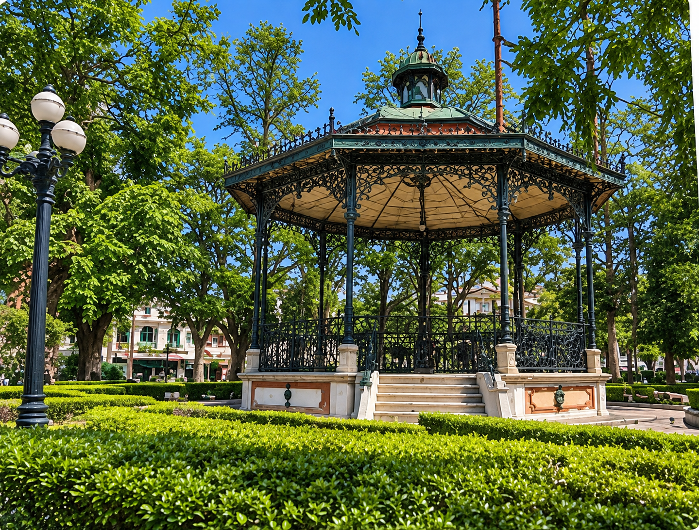

¿Quiénes somos?
Somos Xalapaseando, una página dedicada a descubrir y compartir todo lo que Xalapa tiene para ofrecer. Creemos que nuestra ciudad está llena de cultura, experiencias y lugares que merecen ser conocidos, desde museos, galerías y espacios naturales hasta restaurantes, actividades recreativas y eventos para disfrutar en compañía.
Nuestro propósito es acercarte a todas estas opciones en un solo lugar, facilitando la búsqueda de actividades y experiencias para que siempre encuentres algo que hacer, ya sea que quieras salir con tu familia, convivir con amigos, conocer nuevos lugares o simplemente tomarte un momento para distraerte y relajarte.
Queremos que descubrir Xalapa sea más fácil, accesible y emocionante. Porque siempre hay algo nuevo que conocer y una buena razón para salir a pasear.
Nuestra misión
Facilitar el descubrimiento y disfrute de Xalapa mediante una plataforma digital que reúna en un solo lugar información sobre eventos, espacios culturales, restaurantes, lugares recreativos y atractivos naturales de la ciudad.
Buscamos ofrecer información clara y accesible que permita a las personas conocer, comparar y elegir distintas experiencias de acuerdo con sus intereses y presupuestos.
Nuestra visión
Consolidarnos como una plataforma turística de referencia en Xalapa y, a largo plazo, expandir nuestro alcance para promover otros destinos de la región, convirtiéndonos en un medio que impulse el turismo local, la cultura y el entretenimiento.
Nuestra filosofía
Creemos que disfrutar de una ciudad no tiene que ser complicado ni costoso. Hay experiencias para todos los gustos, edades y presupuestos, y muchas veces solo hace falta conocerlas para animarse a vivirlas.